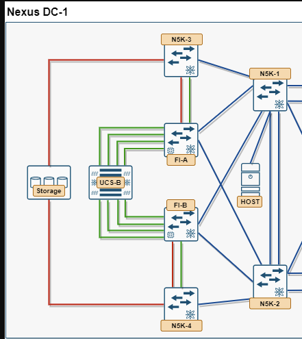

0. Lab Overview¶
0.1 Purpose¶
The objective of this entire session is to get a UCS-B blade booting its OS from a SAN LUN over Fibre Channel. Every module below exists to make that one outcome possible — compute policy gives the blade its identity and boot policy, SAN/LAN uplinks and port modes get traffic off the FI, zoning and NPIV control who can see the boot LUN, trunking/port-channel/load-balancing make the paths resilient, and Module 10 is where you actually watch it boot and prove it. If you only have time for a subset of this guide, prioritize whatever's still needed to reach a successful SAN boot over anything that isn't.
This guide turns your scheduled Nexus DC-1 lab session into a structured, blueprint-aligned practice run toward that goal. It covers the following CCIE Data Center topics end-to-end, using the physical topology you were given:
| Blueprint ID | Topic | Module |
|---|---|---|
| 4.1.a | Compute policies, profiles, and templates | Module 1 |
| 4.2.a | SAN/LAN uplinks | Module 2 |
| 4.2.c | Port modes | Module 3 |
| 4.3.a | UCS Manager FC and FCoE | Module 4 |
| 5.1.a | Zoning | Module 5 |
| 5.1.b | NPV/NPIV | Module 6 |
| 5.1.c | Trunking | Module 7 |
| 5.1.d | PortChannel | Module 8 |
| 5.1.e | Load balancing | Module 9 |
Modules 10–11 tie everything together with end-to-end verification and a self-graded troubleshooting drill, so the day ends with proof the fabric actually works, not just that commands were typed. (This guide doesn't cover 4.2.b, Rack Server Integration — the topology's Host device is used purely as a LAN-attached rack-mount server for the multipathing checks in Module 10, not as a UCSM-integrated rack server.)
0.2 Topology and Assumed Device Roles¶

Nexus DC-1 topology: dual-fabric UCS design with N5K-1/N5K-2 (LAN), N5K-3/N5K-4 (SAN), FI-A/FI-B, UCS-B chassis, Storage, and HostYour diagram ("Nexus DC-1") maps to the classic dual-fabric UCS design. Confirm these role assignments against your actual pod before you start — they drive every VSAN, VLAN, and zoning decision below.
| Device | Role | Notes |
|---|---|---|
| N5K-1, N5K-2 | LAN-side Nexus 5000 pair | vPC domain; Ethernet aggregation for FI uplinks and the Host |
| N5K-3 | SAN-A core/edge switch | FC (or unified port), connects to Storage and FI-A |
| N5K-4 | SAN-B core/edge switch | Mirrors N5K-3 for fabric B; no ISL to N5K-3 (fabrics stay isolated) |
| FI-A | Fabric Interconnect, Fabric A | LAN uplink to N5K-1/2, SAN uplink to N5K-3, downlinks to UCS-B chassis IOM-A |
| FI-B | Fabric Interconnect, Fabric B | Mirrors FI-A for fabric B, IOM-B |
| UCS-B | UCS 5108 blade chassis | Blades with VIC mezzanine (vNICs + vHBAs), dual IOM |
| Storage | FC target array | Dual-homed: one FC path into SAN A (N5K-3), one into SAN B (N5K-4) |
| Host | Rack-mount (C-series) server | Ethernet-attached to N5K-1/N5K-2 only — used as a standalone LAN client, not integrated into UCS Manager |
0.3 Suggested Numbering Conventions¶
This guide uses more than one VSAN per fabric, on purpose, to get real practice with VSAN membership and zoning rather than skipping past it. VLANs, by contrast, are shared across both fabrics here — the same VLAN IDs are trunked identically to the Fabric A and Fabric B uplinks, which matches how most real dual-fabric UCS deployments actually use LAN VLANs for redundancy.
Keep these consistent across every module so zoning, trunking, and verification stay readable:
| Item | Fabric A | Fabric B |
|---|---|---|
| VLANs | 10 (Data), 11 (Mgmt) — shared, trunked on both fabrics |
10 (Data), 11 (Mgmt) — shared, trunked on both fabrics |
| VSANs | 100 (SAN-A-Boot), 101 (SAN-A-Data) |
200 (SAN-B-Boot), 201 (SAN-B-Data) |
| FCoE VLAN mapping (if used) | 1000 → VSAN 100, 1001 → VSAN 101 | 2000 → VSAN 200, 2001 → VSAN 201 |
| vHBAs | vHBA0 → VSAN 100 (boot), vHBA2 → VSAN 101 (data) | vHBA1 → VSAN 200 (boot), vHBA3 → VSAN 201 (data) |
| UCSM domain | Fabric A = Primary FI | Fabric B = Subordinate FI |
| Device alias suffix | -fa |
-fb |
| VLAN Group name | VG-Data (VLAN 10) — pinned primary to FI-A uplink |
VG-Mgmt (VLAN 11) — pinned primary to FI-B uplink |
Why VSANs split into Boot/Data but VLANs don't
A single vHBA can only ever belong to one VSAN, so accessing a second VSAN on the same fabric means a second vHBA, not a wider allowed-list on the first one. That's the opposite of how one Ethernet vNIC can trunk several VLANs at once — worth having straight before Module 1's templates, since it's a common point of confusion between the LAN and SAN sides.